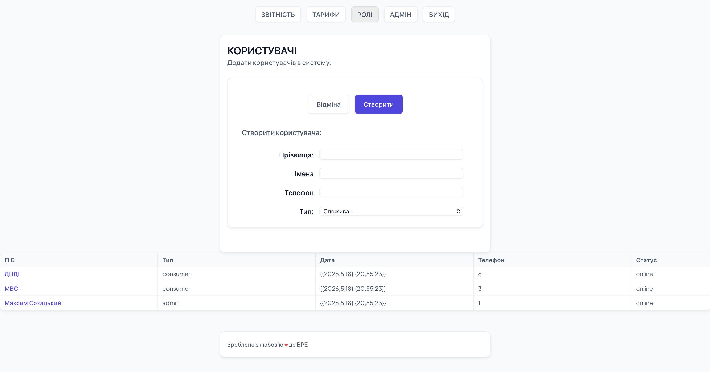
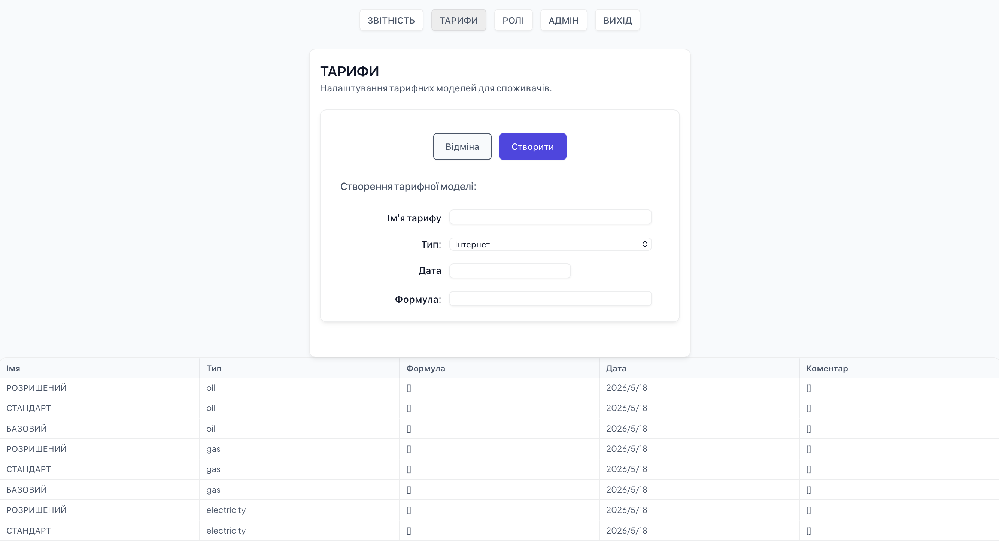
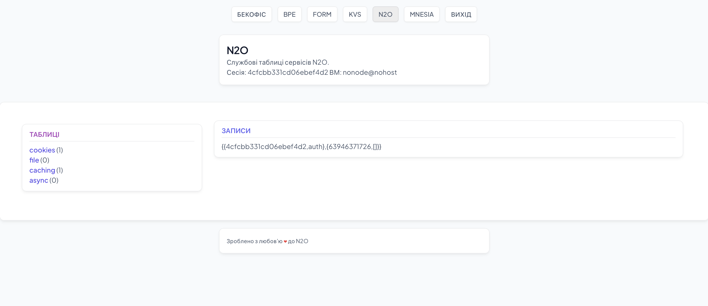
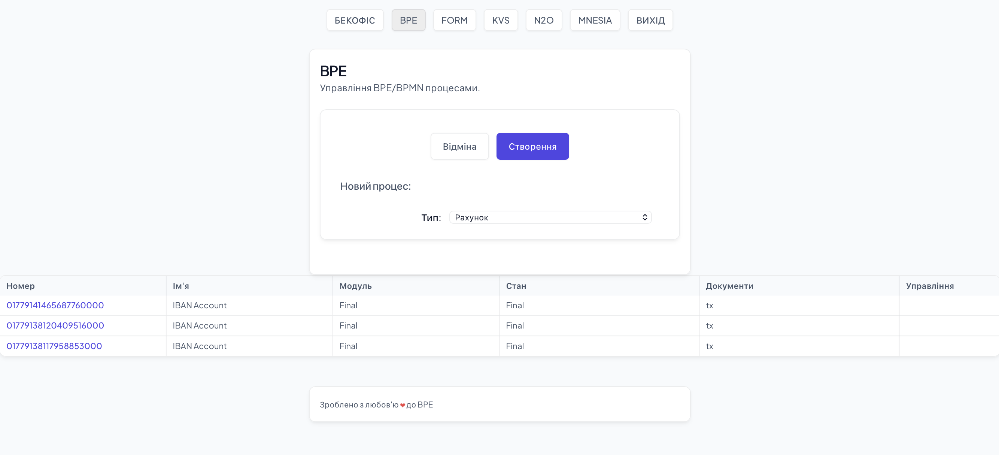
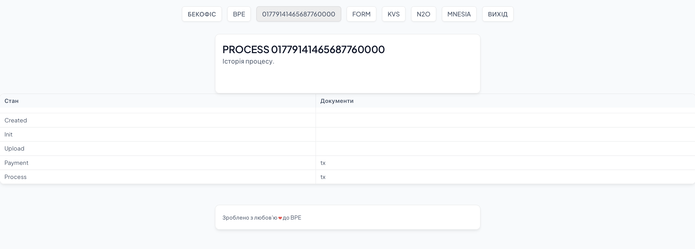
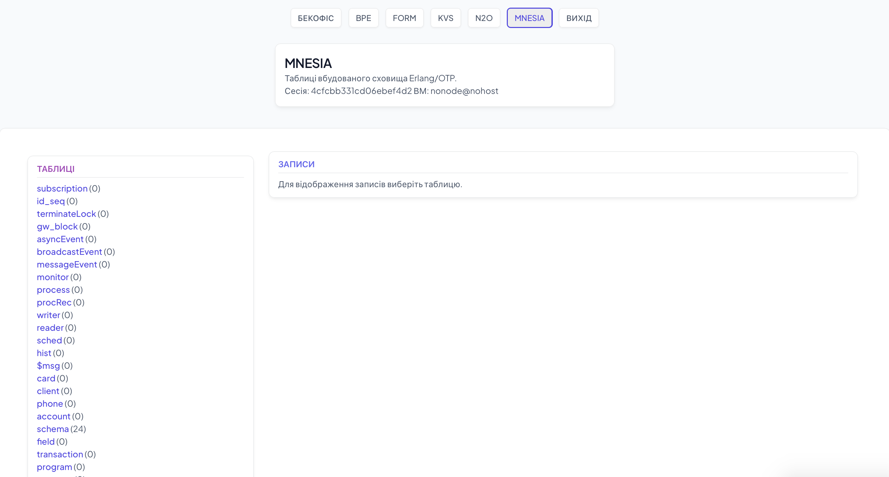
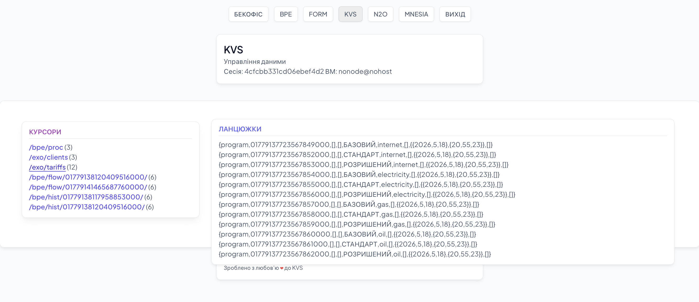
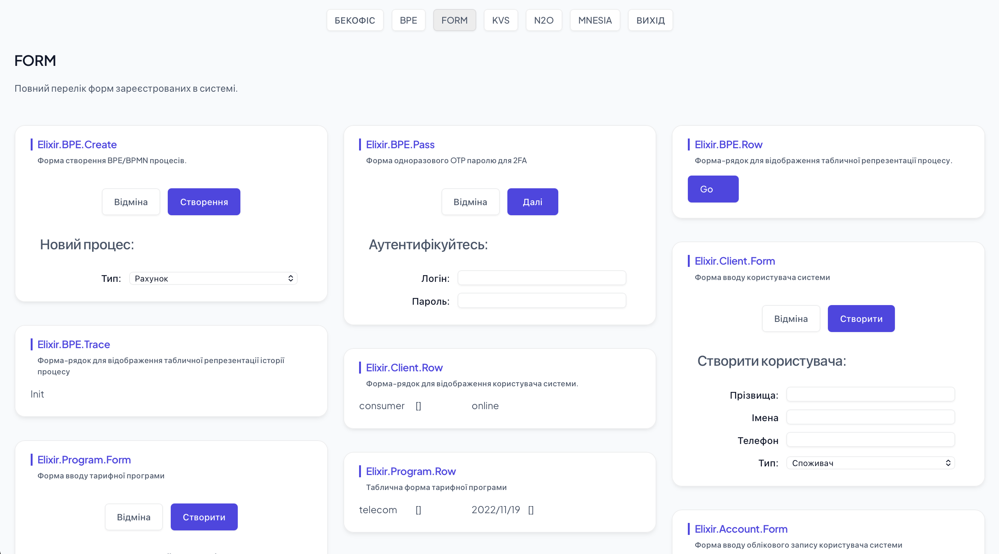
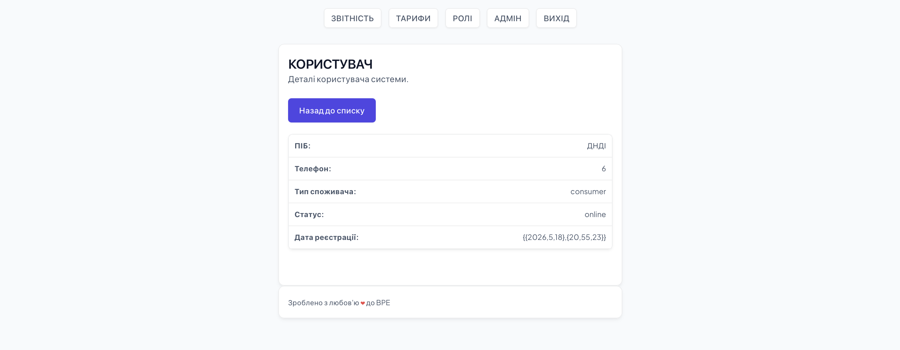

EXO: Client Creation Page
TL;DR How to write your first website and your first page using the N2O web framework

This article shows the general structure of all web frameworks and, using the N2O framework as an example, demonstrates how to create active pages and websites on the Erlang/OTP platform and the Elixir programming language. The billing system of consumer pricing EXO (for Elixir) or client-bank FIN (a similar example for Erlang) is taken as an example and extended with a system users page.
The EXO repository implements an idiomatic example — a billing system for telecom and electricity operators. Users in this system are of two types: 1) administrators, who define tariff models and create user accounts, and 2) consumers, who order services according to tariff models.

In the existing template application, we will create: 1) a static HTML container (file domains.htm); 2) a user model #client{} (file client.hrl); 3) two forms: for user input and its tabular display (Client.Form and Client.Row modules); 4) a page controller that responds to buttons and performs initial page initialization (EXO.Domains module). And we will connect all this into the existing application template (folders config, include, lib, priv/static).
General Structure of Web Frameworks
Web frameworks can be roughly divided into two large classes: 1) client-side frameworks, which build the page entirely on the client, transmitting only data and business objects over channels; 2) server-side frameworks, which build the page or parts of the page on the server and transmit already rendered forms over communication channels. The NITRO web framework belongs to the second class.
Regardless of framework classes, they all share a common stack or architectural levels corresponding to ISO 42010: 1) data level, 2) logic level, 3) presentation level, 4) validation level. Conceptually, these levels are reduced to two: front-end and back-end.
Design (front-end)
— General page styles (BLANK.CSS)
— Field and form styles (FORM.CSS)
— Menu and admin page styles (ADMIN.CSS)
Web Stack (front-end)
— Static and dynamic router (N2O)
— URL parameter parser (N2O)
— Session layer (server and client contexts) N2O
— Controller layer (NITRO web page logic)
— Presentation layer (NITRO HTML elements language)
— Business objects representation layer (X-FORMS language)
Storage and Business Logic (back-end)
— Data model layer (KVS, MNESIA, SQL, Erlang HRL files)
— Business process layer (BPE)
— Access control layer (ABAC)
For each architectural level, the N2O.DEV model offers its own library. For the data schema level, the KVS library is used, which abstracts over relational databases (MNESIA, SQL) and key-value databases (RocksDB, Riak, Cassandra). For the presentation layer (or UI model), the NITRO library is used, which implements HTML5 semantics and offers its own way of defining new control elements. For field-level data validation and automatic form generation, the FORM library is used. All network connections and messages in the system are managed by the N2O library. For business logic, the BPE library is used, which implements the BPMN ISO 19510 standard. For access control, the ABAC library is used, which implements the NIST standard for access control.

NOTE: The access control layer is not used in this EXO example. The business logic layer is used only in the BPE Admin.


The design layer is used but not explained; for a detailed review of the CSS model, see the style documentation page.
Creating a Users Page in the EXO Example
1. Creating a Static HTML Container
Each page of the NITRO/N2O web framework contains a standard prelude that includes CSS stylesheets and the JavaScript portion of the N2O/NITRO/FORM libraries. Usually, this part is shared among all pages.
<!DOCTYPE html>
<html>
<head>
<meta charset="utf-8" />
<meta http-equiv="Content-Type" content="text/html; charset=utf-8" />
<meta name="viewport" content="width=device-width, initial-scale=1.0" />
<meta name="description" content="" />
<title>LOGIN</title>
<link rel="stylesheet" href="css/blank.css" />
<link rel="stylesheet" href="css/forms.css" />
<link rel="stylesheet" href="css/admin.css" />
</head>
<body>
<nav><a href='login.htm'>LOGIN</a></nav>
<aside></aside>
<main></main>
<script src='https://ws.n2o.dev/priv/utf8.js'></script>
<script src='https://ws.n2o.dev/priv/bert.js'></script>
<script src='https://ws.n2o.dev/priv/heart.js'></script>
<script src='https://ws.n2o.dev/priv/ieee754.js'></script>
<script src='https://ws.n2o.dev/priv/n2o.js'></script>
<script src='https://ws.n2o.dev/priv/ftp.js'></script>
<script src='https://nitro.n2o.dev/priv/js/nitro.js'></script>
<script>host = location.hostname; port = 8051;</script>
<script>protos = [$bert]; N2O_start();</script>
</body>
</html>
Such pages are called static resources that can be served by a static HTTP server or via CDN. Once the page is loaded, it runs the N2O_start function, which creates a WebSocket connection and communicates with the server (back-end) according to the N2O/NITRO protocol, under which the client (web browser) executes server commands that modify the page (add, change, or remove DOM elements).
At this stage, unique DOM element names (highlighted in red) are designed on the static HTML page, which will later be used in the page controller logic for their modification.
<main>
<article>
<section>
<h2>USERS</h2>
<p>Add users to the system.</p>
<br>
<div id=ctrl</div>
<div id=frms</div>
<br>
</section>
<div class="table">
<div id=tableHead class="trGroup"> </div>
<div id=tableRow class="trGroup"> </div>
</div>
<br>
</article>
</main>
Here we place one div panel for the button that will open the client input form `ctrl`, one div panel for the input form itself (`frms`), and two panels for the header and body of the clients table (`tableHead`, `tableRow`).
2. Connecting the Page Controller to the Router
The main task of any web framework's router is to determine the page controller that will handle the request for a given URL address. The router is defined at the N2O library level and must contain two mandatory functions, `init` and `finish`, which are called on every URL access in the browser. The task of the `init` function is to put the module name, determined from the URL request `path` using the `route` function, into the N2O context (the `N2O.cx` object). Note that requests can be made both via HTTP and WebSocket protocols (which come with the `/ws` prefix), so we additionally check for this in the `url` function.
defmodule EXO.Route do
require N2O
require Logger
def finish(state, ctx), do: {:ok, state, ctx}
def init(state, context) do
%{path: path} = N2O.cx(context, :req)
{:ok, state, N2O.cx(context, path: path, module: url(path))}
end
def url(<<"/ws/",p::binary>>), do: route(p)
def url(<<"/", p::binary>>), do: route(p)
def url(p), do: route(p)
def route(<<"app/backoffice/domains", _::binary>>), do: EXO.Domains
def route(<<"app/login", _::binary>>), do: EXO.Login
def route(""), do: EXO.Login
def route(_) , do: EXO.Login
end
3. Creating the Page Controller
Now we need to create a controller named `EXO.Domains` which must contain only one mandatory function, `event`, whose parameter is the message received from the web page.
defmodule EXO.Domains do
require EXO
require BPE
require NITRO
def event(:init), do: []
def event(:create), do: []
def event({:"CreateClient", _}), do: []
def event({:"Close",[]}), do: []
def event(_), do: :ok
end
Here we design three additional protocol messages: 1) `:create` — postback for the "New" button located in the `ctrl` panel; 2) `{:\"CreateClient\", _}` — postback for the "Create" button on the form inside the `frms` panel; 3) `{:\"Close\", []}` — postback for the "Cancel" button on the form inside the `frms` panel.
We also decide that when clicking the "New" button, we hide the `ctrl` panel and show the form already built in the `frms` panel during page initialization (the `:init` message), which was hidden before clicking "New". After clicking "Create" or "Cancel", we hide the `frms` form and show the "New" button on the `ctrl` panel again.
4. Creating Business Objects and Initializing the Schema
Before creating forms, we need to define the model of the object that will be displayed on the form. N2O.DEV and ERP.UNO use Erlang `.hrl` files to define type information for business object fields. This allows the models to be used for both Erlang and Elixir projects. Furthermore, having business models in the `.hrl` format allows direct data storage in Mnesia, Erlang/OTP's native storage.


For a detailed specification of the language syntax that can be used inside `.hrl` files, see the official Erlang documentation, TypeSpec section.
-ifndef(CLIENT_HRL).
-define(CLIENT_HRL, "client_hrl").
-record(client, {
id = kvs:seq([],[]),
next = [],prev = [],
bank = [],
iban = [],
local = [],
type = consumer,
status = online,
program = [],
amount = [],
default_account,
accounts = "/exo/:bank/:id/accounts",
default_card = [],
cards = "/exo/:bank/:id/cards",
phone = <<>>,
tax = [],
names = <<>>,
surnames = <<>>,
date = [],
display_name = [],
registration = [] }).
-endif.After defining the business object, it must be added to the global metainformation schema, which is shared by libraries like KVS and FORM. For this, we create a `schema.ex` file where we list (`@schema`) all `.hrl` files in the `include` directory for which tables will be initialized. This happens during compilation, and Erlang records are imported into Elixir automatically using the `Record.extract_all` macro, which accesses the filesystem at compile time. This macro is called for each file in the `include` directory. The mandatory `metainfo` function will be called on every startup and contains the `KVS.table` metainformation for all tables listed in `@schema`.
defmodule EXO do
defmodule EXO
require KVS
require FORM
require Record
@schema [ :account, :client, :card,
:transaction, :currency, :phone, :field, :program ]
def metainfo(), do: KVS.schema( name: :exo, tables: exo())
def exo(), do: :lists.map(fn x -> table(x) end, @schema)
def table(name) do
exo_fields = :application.get_env(:exosculat, :exo_fields, [])
{a,b} = :lists.unzip(:proplists.get_value(name, exo_fields, []))
KVS.table(name: name, fields: a, instance: b)
end
end
Usually, you do not change the logic of `schema.ex`, but only modify the list of `.hrl` files in `@schema`. Here we show that we added the name of our business object as the `:client` atom to this list.
$ mix clean
$ iex -S mix
> require EXO
> EXO.client()
For testing hypotheses and inspecting functions, it is convenient to use the Erlang console (IEx). You can write short Elixir expressions there without fully defining modules. For example, to see how the business object looks in the console, you need to run `require EXO`, after which you can call the module functions that return instances of business objects.
5. Creating the Input Form, Configuring Postback and Sources
A form is a visual representation of a business object, of which there can be several: for inputting information, editing, searching, read-only viewing, and rendering as a row for tabular display. The full list of form types according to the FORM library is: `none`, `create`, `edit`, `search`, `view`.
Every web framework implementing the X-FORMS specification must include a form metainformation specification required for rendering. For example: whether the field is enabled or disabled, its default value, field width, field type, name, server-side module containing the logic, stream where dictionary values for this field are stored, etc.
The `FORM` model is defined in the `include` directory of the respective library and contains `FORM.document` (form), `FORM.but` (buttons), and `FORM.field` (fields). The form document itself, `FORM.document`, consists of four main parts: name, list of sections, list of buttons, and list of fields in sections.

When we want to make form elements, such as buttons or fields, active — meaning they transmit specific events (like `onclick`) to the server — we define a `postback` property for that element. This value will reach the previously defined page controller when the event occurs. When sending the `{:\"CreateClient\", _}` postback message to the server, all form field values currently present in the browser context listed in the `sources` field will also be transmitted. The names of `sources` have a three-component structure `X_Y_Z`, where `X` is the field name, `Y` is the business object name, and `Z` is the form type (`none`, `create`, `edit`, `search`, `view`). In this example, forms without modifiers (`none`) are used.
Note that the `id` properties of `FORM.field` elements must match the fields defined in the `EXO.client` business object; otherwise, the form renderer will not be able to find the type information. Each form must define three mandatory functions: 1) `doc`, which returns a simple string explaining in one sentence what the form is for; 2) `new`, which takes three parameters: the form name, the business object to visualize, and optional settings, and returns `FORM.document` with the description of all fields, buttons, and sections; 3) `id`, which returns the default reference business object.
defmodule Client.Form do
require EXO
require NITRO
require FORM
require BPE
def doc(), do: "System user input form"
def id, do: EXO.client()
def new([], _, _), do: []
def new(name, _client, _) do
:erlang.put(:type_client_none, :consumer)
FORM.document(
name: :form.atom([:client,name]),
sections: [
FORM.sec(name: ["Create user: " ])],
buttons: [
FORM.but(id: :decline,
name: :decline,
title: "Cancel",
class: [:cancel],
postback: {:"Close",[]} ),
FORM.but(id: :proceed,
name: :proceed,
title: "Create",
class: [:button,:sgreen],
sources: [:surnames_client_none, :names_client_none,
:phone_client_none, :type_client_none],
postback: {:"CreateClient", :form.atom([:client,name])})],
fields: [
FORM.field(id: :surnames,
name: :surnames,
type: :string,
title: "Surnames:",
labelClass: :label),
FORM.field(id: :names,
name: :names,
type: :string,
title: "Names",
labelClass: :label),
FORM.field(id: :phone,
name: :phone,
type: :string,
title: "Phone",
labelClass: :label),
FORM.field(
id: :type,
name: :type,
title: "Type:",
type: :select,
default: :consumer,
options: [
FORM.opt(name: :consumer, checked: true, title: "Consumer"),
FORM.opt(name: :admin, title: "Administrator"),] ) ] )
end
end
6. Creating a Tabular Form
If a business object needs to be displayed quickly in a table, you can bypass `FORM` and directly create a view using HTML DSL, constructing elements using appropriate Erlang records. From the second parameter of the `new` function, which expects an `EXO.client`, we extract the fields `phone`, `names`, `surnames`, `type`, `status`, and `date`, and display them in a panel with 5 columns.
def header() do
NITRO.panel(id: :header,
class: :th,
body: [ NITRO.panel(class: :column20, body: "Full Name"),
NITRO.panel(class: :column20, body: "Type"),
NITRO.panel(class: :column20, body: "Date"),
NITRO.panel(class: :column20, body: "Phone"),
NITRO.panel(class: :column10, body: "Status") ] )
end
See the table header as the `header` function in the page controller module `EXO.Domains`. Note that the classes for panels are identical for both the header columns and table rows.
defmodule Client.Row do
require EXO
require NITRO
def doc(), do: "Row form for displaying a system user."
def id(), do: EXO.client()
def new(name, client, _) do
phone = EXO.client(client, :phone)
names = EXO.client(client, :names)
surnames = EXO.client(client, :surnames)
type = EXO.client(client, :type)
status = EXO.client(client, :status)
date = EXO.client(client, :date)
NITRO.panel(id: :form.atom([:tr,name]), class: :td, body: [
NITRO.panel(class: :column20,
body: NITRO.link(href: "user.htm?p=" <> :nitro.to_binary(phone),
body: names <> " " <> surnames)),
NITRO.panel(class: :column20, body: :nitro.to_binary type),
NITRO.panel(class: :column20, body: :nitro.compact date),
NITRO.panel(class: :column20, body: :nitro.compact phone),
NITRO.panel(class: :column10, body: :nitro.to_binary status)
])
end
end
Usually, tabular forms do not contain active elements with `postback` and `sources`, like in this example.

7. Configuration Settings
Once we have defined the container, controller, forms, and business object, we now need to integrate it all into our system using the `config.exs` configuration file. We place pages in the `priv/static` folder, configure the router in the `n2o.routes` setting, and add forms to the `form.registry` list. The schema module implementing the `metainfo` function is added to the data schema, the `kvs.schema` setting. Other variables are left as is.
config :n2o,
pickler: :n2o_secret,
app: :exosculat,
mq: :n2o_syn,
port: 8051,
tables: [:cookies, :file, :caching, :async],
protocols: [:n2o_heart, :nitro_n2o, :n2o_ftp],
routes: EXO.Route
config :kvs,
dba: :kvs_rocks,
dba_st: :kvs_st,
schema: [:kvs, :kvs_stream, :bpe_metainfo, EXO]
config :form,
module: :form_backend,
registry: [Client.Row,Client.Form]
If there is a need to override configuration variables without restarting the server (when they are normally read), you can use the `application.set_env` function:
> :application.set_env :form, :registry, [Client.Row,Client.Form]
> :application.get_env :form, :registry
{:ok, [Client.Row, Client.Form]}
8. Page Controller init Protocol
def event(:init) do
:nitro.clear(:tableHead)
:nitro.clear(:tableRow)
:nitro.insert_top(:tableHead, header())
:nitro.clear(:frms)
:nitro.clear(:ctrl)
mod = Client.Form
:nitro.insert_bottom(:frms,
:form.new(mod.new(mod,mod.id(), []), mod.id(), []))
:nitro.insert_bottom(:ctrl,
NITRO.link(id: :creator,
body: "New",
postback: :create,
class: [:button, :sgreen]))
:nitro.hide(:frms)
:lists.map(fn x -> :nitro.insert_top(:tableRow,
Client.Row.new(:form.atom([:row, EXO.client(x, :id)]), x, [])) end,
:kvs.all('/exo/clients'))
end
9. Button Handlers for Close and Create
def event({:"Close",[]}) do
:nitro.hide(:frms)
:nitro.show(:ctrl)
end
def event({:"CreateClient", _}) do
date = :calendar.now_to_datetime :erlang.timestamp
type = :nitro.q(:type_client_none)
names = :nitro.q(:names_client_none)
phone = :nitro.q(:phone_client_none)
surnames = :nitro.q(:surnames_client_none)
id = :kvs.seq([],[])
client = EXO.client(id: id, phone: phone, names: names,
surnames: surnames, status: :online,
type: type, date: date)
nitro = :form.new(
Client.Row.new(
:form.atom([:row,id]), client, []), client, [])
:kvs.append client, '/exo/clients'
:nitro.insert_top(:tableRow, nitro)
:nitro.hide(:frms)
:nitro.show(:ctrl)
end
10. Direct Messages
> direct(tuple(atom('Close'),nil()))
11. Publishing the Application to the hex Package Manager
$ mix hex.publish